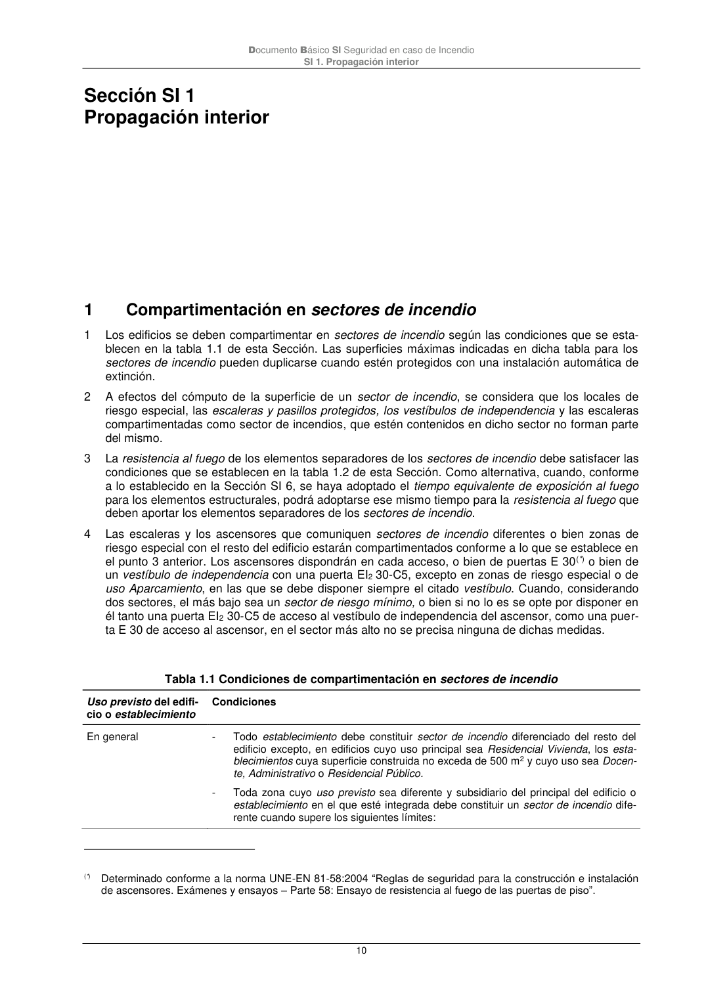

DB-SI · Sección SI 1 Propagación interior · 1 Compartimentación en sectores de incendio · versión 2025-03-04
SHA256: 0a2e78cd62471d9cc5cfe2efbc6aa39fdbad73c124aea7b039f9de96c141e105 · página física 10 de 92 · métodos de encabezado
solo si están cotejados.
Formatos: Markdown · JSON de bloques · PDF p. 10 · imagen PNG
Documento Básico SI Seguridad en caso de Incendio
SI 1. Propagación interior
10
Sección SI 1
Propagación interior
1
Compartimentación en sectores de incendio
1
Los edificios se deben compartimentar en sectores de incendio según las condiciones que se esta-
blecen en la tabla 1.1 de esta Sección. Las superficies máximas indicadas en dicha tabla para los
sectores de incendio pueden duplicarse cuando estén protegidos con una instalación automática de
extinción.
2
A efectos del cómputo de la superficie de un sector de incendio, se considera que los locales de
riesgo especial, las escaleras y pasillos protegidos, los vestíbulos de independencia y las escaleras
compartimentadas como sector de incendios, que estén contenidos en dicho sector no forman parte
del mismo.
3
La resistencia al fuego de los elementos separadores de los sectores de incendio debe satisfacer las
condiciones que se establecen en la tabla 1.2 de esta Sección. Como alternativa, cuando, conforme
a lo establecido en la Sección SI 6, se haya adoptado el tiempo equivalente de exposición al fuego
para los elementos estructurales, podrá adoptarse ese mismo tiempo para la resistencia al fuego que
deben aportar los elementos separadores de los sectores de incendio.
4
Las escaleras y los ascensores que comuniquen sectores de incendio diferentes o bien zonas de
riesgo especial con el resto del edificio estarán compartimentados conforme a lo que se establece en
el punto 3 anterior. Los ascensores dispondrán en cada acceso, o bien de puertas E 30(*) o bien de
un vestíbulo de independencia con una puerta EI2 30-C5, excepto en zonas de riesgo especial o de
uso Aparcamiento, en las que se debe disponer siempre el citado vestíbulo. Cuando, considerando
dos sectores, el más bajo sea un sector de riesgo mínimo, o bien si no lo es se opte por disponer en
él tanto una puerta EI2 30-C5 de acceso al vestíbulo de independencia del ascensor, como una puer-
ta E 30 de acceso al ascensor, en el sector más alto no se precisa ninguna de dichas medidas.
Tabla 1.1 Condiciones de compartimentación en sectores de incendio
Uso previsto del edifi-
cio o establecimiento
Condiciones
En general
-
Todo establecimiento debe constituir sector de incendio diferenciado del resto del
edificio excepto, en edificios cuyo uso principal sea Residencial Vivienda, los esta-
blecimientos cuya superficie construida no exceda de 500 m2 y cuyo uso sea Docen-
te, Administrativo o Residencial Público.
-
Toda zona cuyo uso previsto sea diferente y subsidiario del principal del edificio o
establecimiento en el que esté integrada debe constituir un sector de incendio dife-
rente cuando supere los siguientes límites:
(*) Determinado conforme a la norma UNE-EN 81-58:2004 “Reglas de seguridad para la construcción e instalación
de ascensores. Exámenes y ensayos – Parte 58: Ensayo de resistencia al fuego de las puertas de piso”.
